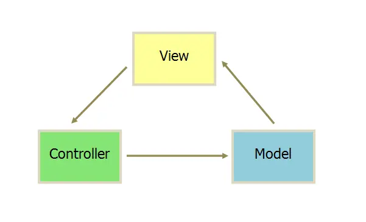
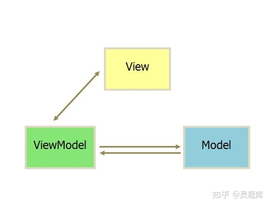

一丶SPA单页面应用优缺点
SPA:整个项目还有一个html文件,路由切换进行页面切换
优点:
1.用户体验及交互比较流畅
2.提取组件开发,易于后期维护
3.文件打包比较少,减轻服务器压力(js渲染各个页面html,不再是服务器渲染)
缺点
1.不利于SEO优化(搜索引擎优化),搜索引擎爬虫只会爬取html不会爬取js
2.第一次进入比较慢,因为要一次性加载全部js(已有按需加载策略)
二丶MVC和MVVM架构
1. MVC: View接受用户行为通知Controller,Controller通知Model进行数据更新,Model再通知View进行页面更新,Model和View进行了交互
三角架构: 用户通过View视图层操作改变数据给Controller控制器,控制器通知Model数据层数据更改,数据层再通知View视图层更新
执行流程：
用户操作 ➡ View（负责接收用户的输入操作）➡ Controller（业务逻辑处理）➡ Model（数据持久化）➡ View（将结果反馈给View）
业务逻辑全部分离到 Controller 中，View 只负责展示，Model 只是数据的存储，两者都是相互独立的，模块化程度高。
当业务逻辑变更的时候，不需要变更 View 和 Model，只需要 Controller 换成另一个 Controller，也就达到了解耦和重用的目的。
-------------------------------------------------------------------------------------------------------------------------------------------
2. MVVM: 数据双向绑定,用户行为更改数据,数据可以主动触发视图更新,双向通过ViewModel进行交互,Model和View不直接进行交互
也是三角架构,C变成了VM,Model与ViewModel双向交互,Model不与直接View交互而是通过ViewModel进行交互,ViewModel通过双向数据绑定将View和Model层连接了起来
ViewModel
MVVM模式的核心，它是连接view和model的桥梁。它有两个方向：
将Model转化成View，即将后端传递的数据转化成所看到的页面。实现的方式是：数据绑定 。
将View转化成Model，即将所看到的页面转化成后端的数据。实现的方式是： DOM 事件监听 。